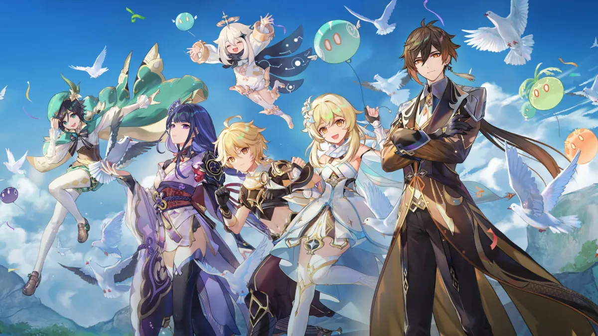
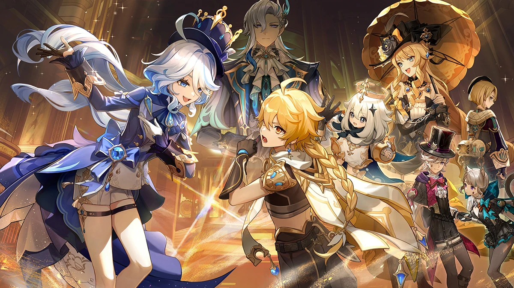

A versão 4.4 trará muitos conteúdos que os Viajantes não podem perder, incluindo o retorno do Check-in Diário por tempo limitado, que concederá até 10 Destinos Entrelaçados. Mais três Destinos Entrelaçados e duas Resinas Frágeis serão entregues no e-mail do jogo, totalizando 13 tiros em banners.

O Festival do Ritual de Lanternas não é desconhecido pelos fãs do jogo. O evento celebra a virada do ano e é ideal para embarcar em uma aventura diferente do enredo principal e coletar recompensas. O Festival terá novas histórias exclusivas, mini-games e itens de resgate. Ao completar todas as missões, os jogadores poderão resgatar gratuitamente uma nova skin para Xingqiu.

Duas personagens também serão contempladas com novas skins. Ganyu e Shenhe receberão novos visuais na versão 4.4 de Genshin. Diferentemente da skin de Xingqiu, que estará disponível gratuitamente, os trajes da dupla poderão ser encontrados na loja do jogo.